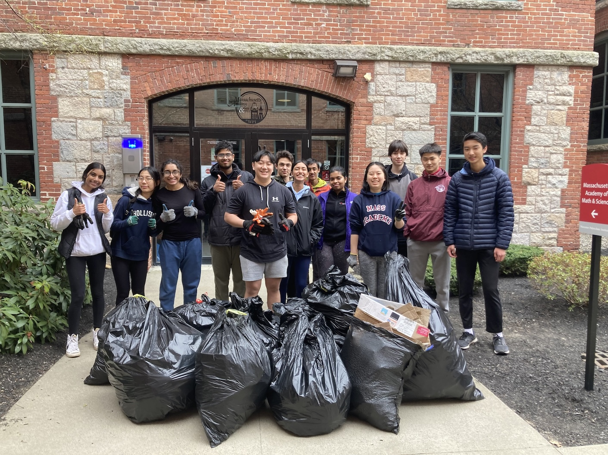

Hello, my name is Travis Tran and I am from Marlborough, Massachusetts. I am a current sophomore at Johns Hopkins University in Baltimore, MD majoring in biomedical engineering and minoring in financial economics. I am interested in the intersection of engineering and medicine and the discovery of novel therapies, treatments, and cures that can arise from it. I have a secondary interest in the stock market.
Some things I enjoy are snowboarding, frisbee, and following the Boston sports teams.
I have also participated in a lot of community service events in my local community and it is something I am extremely proud of. As co-president of my high school's community service club, I helped to organize our "STEM Saturday" events to promote STEM education in the local area and also ran an Earth Day cleanup around the city of Worcester, MA.
